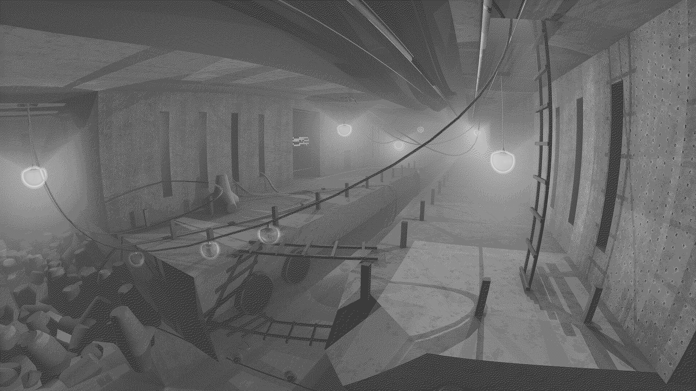

visual/3d/structure/2020
[2020.01]
Scanning Hostels Inside & Outside


this was one of my first experiments with exploring "slices", and the artistic implications of them. in these two .gifs i was interested in how a "inanimate" buildings might become living when being examined with the same tools we use to study on humans.
[2020.05]
Deep Organics Filtration

this image is a digital reconstruction of areuvelian filtration units that were installed in points of prominent biomass.
[2020.05]
Deep Organics Filtration

this image is a digital reconstruction of areuvelian filtration units that were installed in points of prominent biomass.
return to pluslorem.wiki